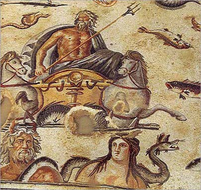

Hellespontos’un (Çanakkale Boğazı) Avrupa yakasında Sestos isimli kentte görkemli bir Afrodit tapınağı vardı. Tapınakta kumru kuşlarına bakan bakire Hero’nun güzelliği, Sestos kentinin sınırlarını çoktan aşmış bütün bölge kentlerinde dilden dile dolaşır olmuştu. Hero öylesine güzel bir kızdı ki, onun gören herkes Afrodit ile karşılaştığını sanıyordu.
Sestos’da kışın göçüp ilkbaharın doğayı canlandırması ile birlikte, doğanın cana gelişini kutlamak için Afrodit adına şenlikler düzenleniyordu. Bu şenlikler sırasında tüm çevre illerden insanlar, Sestos’a gelerek tanrıçaya dileklerini sunardı. Bunların içinde özellikle aşk hasreti çeken gençler ayinlere katılarak Afrodit’nin huzurunda gözyaşı dökerler, sevgisiz gönüllerine sevgi düşürmesi ve kendilerine denk bir aşık vermesi için Afrodit dua ederlerdi. Bu şenliklerden birinde boğazın Anadolu yakasından gelen, yakışıklılığı ile dillere destan Leandros da tapınak ayinine katılmıştı. Alnını mersin ağacının çelenkleriyle süsleyen bu gencin bir elinde tanrıça Afrodit’ye sunulmak üzere kumru yuvası, öteki elinde ise bir vazo vardı. Leandros, o kadar utangaç ve sıkılgandı ki, tapınağın kapısına geldiğinde kimsenin yüzüne bakmaya cesaret edemiyordu.
Leandros ayine katılmak için tapınağa geldiğinde yine her zamanki utangaçlığı ile başını yere eğerek elindeki hediyeleri sunmak üzere doğruca mihraba yöneldi. Elindeki armağanları mihraba koyar koymaz, tam bu sırada Hero ile göz göze geldi. Kızın güzelliği ile adeta büyülenen Leandros neye uğradığı şaşırmış, bir an Afrodit ile yüz yüze gelmiş gibi olmuştu. Az sonra kendine gelen Leandros, utangaç bir tavırla kendini mabedin sütunlarından birinin arkasına gizledi. Ayin başladıktan sonra yeniden cesaretlenerek Hero’ya doğru gitmeye başladı. Ancak Hero hiç oralı olmuyordu.
Hero’ya ilk görüşte gönlünü kaptıran Leandros, gün batıncaya kadar tapınağın bir köşesinde Hero ile görüşeceği anı bekledi. Ayin bitip ayine katılanlar birer ikişer tapınağı terk ettikten sonra Leandros, saklandığı yerden çıktı ve Hero’nun yanına gitti. Onu gören bakire Hero, bir an şaşkınlıktan ne yapacağını bilemedi. Genç rahibe korkmuştu. Ancak bu dünya yakışıklısı delikanlıya karşı da içinden sıcak bir duygu seli akıp gitti. Bu ilk görüşmede Hero Leandros’un bütün yalvarıp yakarmalarına rağmen onunla konuşmasa da ondan kaçmadı da...
Leandros ertesi gün yine aynı saatte ve aynı yerde kızı bekledi ve tekrar ona yalvarmaya başladı. Fakat Leandros’a olumlu yanıt vermeyen Hero, onu susturmak istedi. Aşk ateşiyle yüreği köze dönen yakışıklı delikanlı, Hero’nun bütün susturma çabalarına daha büyük bir feryat ile yanıt verdi. Aşığının yakarışları karşısında ne yapacağını bilemeyen Hero, ona bir an evvel memleketine dönmesini, kendisinin bakire bir rahibe olduğunu ve bundan sonra da sonsuza dek bakire kalacağını söyledi. Leandros ise aşk ve güzellik tanrıçası Afrodit’nin aşık olduğu için kendi rahibesine kızmayacağını aksine aşk tanrıçasının aşkları yaşatmak için var olduğunu, kendi aşkına cevap vermemesi durumunda Afrodit’nin gazabını üstüne çekeceğini söyledi. Bunun üzerine Hero sahilde bulunan ıssız bir kalede oturduğunu, bu kalede ihtiyar bir köle bulunduğunu ve daima kendisini gözetlediğini, üstelik Leandros’un memleketi ile arada bir denizin bulunduğunu, bundan sonra görüşmemelerinin en doğrusu olacağını söyledi.
Aşkın meyiyle iyice sarhoş olup kendinden geçen Leandros ise gece karanlıkta denizi yüzerek geçeceğini ve yine de kendisini göreceğini belirtti. Hero genç delikanlıyı inadından vazgeçirmek için ne yapıp ettiyse, başarılı olamadı. Ne denizden esen korkunç rüzgarlar, ne karanlığın kucağına atılan dev dalgalar, ne de boğazın yalçın kayalıkları delikanlının gözünü korkutmuyordu. Hero Leandros’un sözlerinden kendisine ne kadar aşık olduğunu anladı ve yüreğindeki donmuş duygu dağını yumuşatarak aşığının ellerini sıktı. Tam bu sırada Hero’nun yanındaki köle kadın, güneşin oktan ışıklarını yeryüzünün üstünden çektiğini ve artık ıssız kaleye dönmelerinin zamanı geldiğini söyledi. Hevesleri yarım kalan iki genç çaresiz ayrıldılar.
Leandros Hero’dan ayrıldıktan sonra yaşadığı kent olan Aydos’a dönmek üzere arkadaşları ile birlikte yola çıktı. Leandros ve arkadaşları şehirlerine gelince herkes dağılarak evine gitti. Fakat Leandros sahilde bir kayanın üzerine oturarak karşı kıyıda bulunan sevgilisi Hero’yu düşünmeye devam etti.
Hero da ıssız kalesine varmış, dışarıdaki havayı gözetliyordu. Bu sırada birden korkunç bir fırtına çıkarak deniz kudurmaya, sanki dipten bir devin itişiyle harekete geçiyormuş gibi büyüyerek kıyıya koşan dalgalar yalçın kayaları dövmeye başladı. Hero bu kasvetli havada yolculuk edenleri koruması için Afrodit’ye bir kandil yakılmasını isteyerek köle kadına kalenin uygun bir yerine koymasını söyledi. Bu sırada denizde esen rüzgar kandilini ışığını iyice parlatarak gürleştirdi.

Odysseus’u konu alan bir mozaik.
Tam bu sırada dışarıdan bir uğultu yükseldi. Genç bir adamın sesini andıran bu ses, denizden geliyordu. Hemen pencereye koşan Hero ile köle kadın, denizde yüzmekte olan genç bir adam gördüler. Hırçın dalgalarla boğuşarak yol alan genç adam, kaleye doğru yüzüyordu. Az sonra genç adam sahile geldikten sonra ayağa kalktı ve kalenin dibindeki taşları hızla tırmanmaya başladı. Hero ile köle kadın, bu gencin kaleye geldiğini anlamakta güçlük çekmediler. Az sonra kale kapısında beliren genç soğuktan tir tir titriyordu. Köle kadın onu hemen içeri alarak Hero’nun odasına götürdü. Köle kadın bir yandan dalgaların arasından çıkıp gelen bu tanrı misafirini ısıtıp kurularken, bir yanda da gecenin bu saatinde dalgaların içinde ne işi olduğunu öğrenmeye çalışıyordu. Leandros ise kendisinin denizin kollarına atan aşk ateşi olduğunu söyledi, ancak kimi sevdiğini söylemekte tereddüt etti. Bunun üzerine Hero, oğlanın bu tavrından alınarak kimi sevdiğini gizlemesinin yakışıksız bir davranış olduğunu söyledi. Köle kadın, Leandros’un utangaç biri olduğunu anlayınca, onu rahatlatmak için gerçekten içinde sevgi varsa, bu sevginin de karşılığını olduğunu, evlenmeleri için bir engel olmadığını söyledi. İki kadının tavırlarından rahatlayan Leandros da, Hero’ya olan aşkını itiraf etti.
O günden sonra Hero ile Leandros, birbirlerine deli gibi aşık oldular. Her gece güneş battığında Hero, kandili kalenin burçlarına koyuyor, Leandros da boğazın azgın dalgalarıyla boğuşarak sevgisinin kollarına koşuyordu. Böylece ilkbahar ve yaz geçti. Artık havalar iyice soğumaya, deniz daha bir hırçınlaşmaya, kışın soğuk rüzgarları kale burçlarını dövmeye başladı. Bu durum Hero’yu çok üzüyor, genç kız günden güne daha çok içine kapanıyordu. Zira kışın gelmesi ile birlikte artık Leandros boğazı yüzerek geçemeyecekti. Bu da kış bitimine kadar sevgilisini göremeyeceği anlamına geliyordu genç kızın. Genç kız, azgın dalgalara sevgilisini kurban vermek istemediğinden içi kan ağlayarak Leandros’un bahara kadar artık kaleye gelmemesini istedi. Sevgilisini üzmek istemeyen Leandros ise gönlü hiç razı olmadığı halde onun bu isteğini yerine getireceğine söz verdi. Ancak kızdan da artık kalenin burçlarında kandil yakmamasını istedi.
Ertesi gün tekrar, sahildeki kayalığa gelip kaleyi izleyen Leandros, kalenin burcunda yanan ışığı gördü. Bu, sevgilisinin kendisini kaleye çağırdığı anlamına geliyordu. Aşk tanrıçası Afrodit, genç delikanlının gönlüne öyle kavurucu bir aşk ateşi düşürmüştü ki; ne kuduran deniz, ne kayaları parçalayan rüzgar, sevgilisinin özlemiyle yanıp tutuşan genç delikanlının umurunda değildi. Leandros tam karşı kıyıya yüzmeyi düşünürken, kandilin ışıkları birden söndü. Bunun üzerine kederler içinde harap olan Leandros bir balıkçı kulübesine giderek Hero’ya bir mektup yazdı ve bu mektubu sevgilisine vermesi için balıkçıya emanet etti.
Ertesi gün karşı kıyıya giden balıkçı söylendiği gibi Leandros’un mektubunu Hero’ya verdi. Bu mektupta Leandros, kabaran rüzgarlara, yükselen dalgalara rağmen kendisinden ayrı kalmanın ne kadar zor geldiğini anlatarak Hero’ya olan sonsuz sevgisini dile getiriyordu. Kız ise bu sevgi dolu sözler karşısında artık daha fazla dayanma gücü kalmadığını, bir an evvel Leandros’u görmek için can attığını bildirine bir mektup yazarak balıkçıya verdi.
Leandros balıkçının sevgilisinden mektup getirdiğini öğrenince, ne yapacağı bilemedi. Sabırsızlıkla mektubu açıp Hero’nun aşk dolu sözlerini adeta içine çekti. Sevgilisinin kendisini görmek için nasıl katlanılamaz bir özlemle dolduğunu gören Leandros hiçbir şeyi aklına getirmeksizin doğruca dalgaların içine attı kendini... Dalgalar o kadar büyük, rüzgar o kadar şiddetli idi ki, bu koşullarda yüzerek karşı kıyıya geçmenin imkanı yoktu. Ama hiçbir şey umurunda değildi Leandros’un. Afrodit’nin isteği olan o aşk için gerekirse bu dalgaların içinde boğulup gitmeyi bile göze almıştı. Leandros bu düşüncelerle karşı kıyıya yüzerken, bir aralık Hero’nun kale burcunda yaktığı kandil, rüzgarın etkisiyle söndü. Kandilin sönmesi ile hırçın dalgaların arasında yolunu kaybeden Leandros umutsuzca yüzmeye devam etti. Bu sırada hava daha da sertleşmiş, sert kasırgalar denizi beşik gibi sallamaya başlamıştı.
Zaman geçtikçe Hero, geciken sevgilisi için iyice kaygılanmaya başladı. Köle kadın rahibenin ne kadar üzülüp heder olduğunu görünce onu zorla yerine yatırdı. Rahibeyi uyuttuktan sonra ise kendisi yattı. Ne var ki, rahibenin gözüne bir damla bile uyku girmemişti. Köle kadın, rahibenin derin uykulara daldığını düşündüğünden kendisi de gönül rahatlığı ile uykunun kollarına daldı. Fakat aradan bir süre geçip uyandığında, rahibenin yatağında olmadığını gördü. Korku içinde kalenin her yerini didik didik aradı, fakat rahibe hiçbir yerde yoktu. En son kalenin üzerine çıktığında burçlardan aşağıya baktı ve bir kayanın üzerinde duran rahibenin tülünü gördü. Hemen sahile inen kadın, burada Helo’nun cansız bedeni ile karşılaştı. Hero, köle kadın uyuduktan sonra dayanamayarak deniz kıyısına inmiş ve sevgilisinin cansız bedeniyle karşılaşınca, onun üzerine kapanarak canına kıymıştı.
Ertesi gün iki aşığın boğazın sularında can verdiğini öğrenen Sestos halkı, deniz kıyısına giderek ellerindeki çiçekleri denize bıraktılar ve sonra da iki aşığın naaşlarını bir mezara koydular. Böylece Afrodit, iki aşığı sonsuza dek ayrılmamacasına toprağın altında bir araya getirmiş oldu.